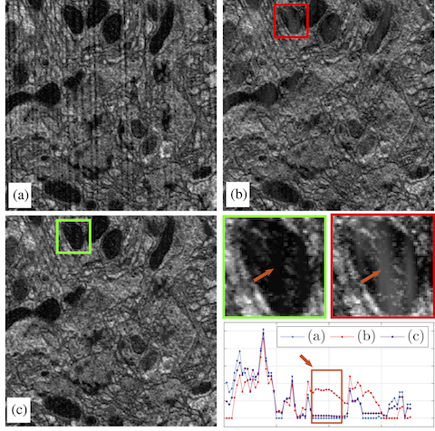

Strip The Stripes
Artifact destection and removal for scanning electron microscopy.
Scanning Electron Microscopy (SEM) is a popular high resolution imaging modality for biological samples that has recently been applied to neural circuit reconstruction. For this application, relatively large volumes are imaged by repeatedly ablating away the exposed surface of the volume with a focused ion beam (FIB), which can cause beam-aligned striping artifacts in images of the remaining layers. We present an automatic pipeline designed to detect and correct for such striping artifacts while minimally degrading the unknown artifact-free image. The proposed method addresses this problem by computing a data-driven mask for the corrupted frequency band and subsequently solving a variational formulation of the image reconstruction problem using efficient methods from convex optimization. Results on simulated and real data show state-of-the-art denoising performance.
Overview of the study
Our goal in this work is to leverage signal processing techniques to correct the striping artifacts in FIB-SEM images while keeping the true underlying structures (approximately) intact. The proposed pipeline utilizes the properties of the stripes in the Fourier domain to automatically detect the corrupted frequency band. The proposed framework then admits different variational formulations of the inverse problem allowing for a trade-off between speed and simplicity of the method on one hand and accuracy on the other. Additionally, the proposed methods take both frequency and image domain properties of the data into account. Results on simulated and real data show state-of-the-art denoising performance. Although this study focuses on FIB-SEM, the developed framework is general and can be easily extended to other imaging modalities.
Sample result
This figure shows one slice of (a) noisy, (b) denoised with FFT-RingV1, and (c) denoised with FFT-RingV2. In the lower right, we show zoomed regions and one horizontal scan line of each zoomed image. Better matching to the dark region is observed.
